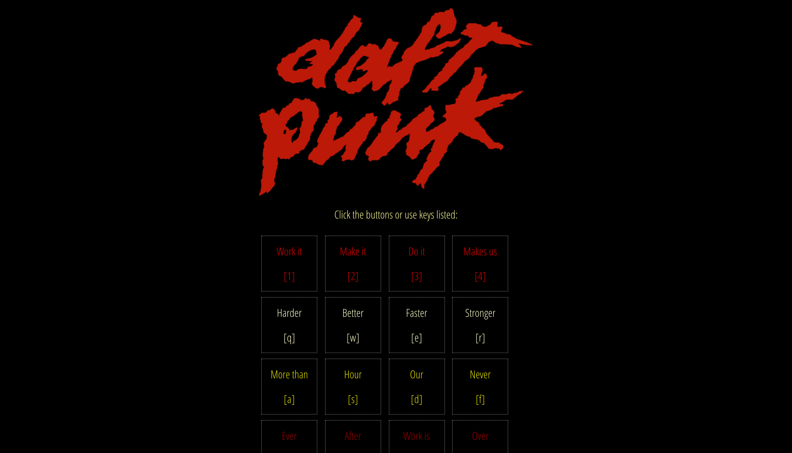

Daft Punk Soundboard
HTML, CSS, javaScript
This was one of our first homeworks at the WDI course when learning javaScript. It consists of a sound board with sounds from the music Harder Better Faster from the band Daft Punk.
This was one of our first homeworks at the WDI course when learning javaScript. It consists of a sound board with sounds from the music Harder Better Faster from the band Daft Punk.